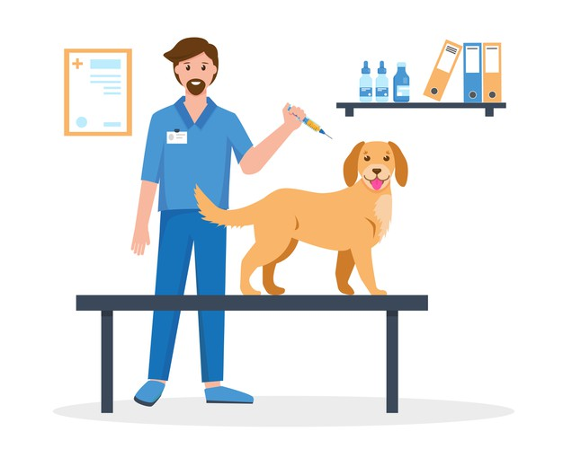
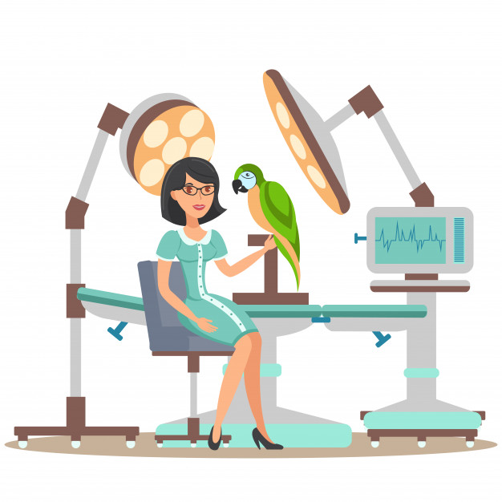
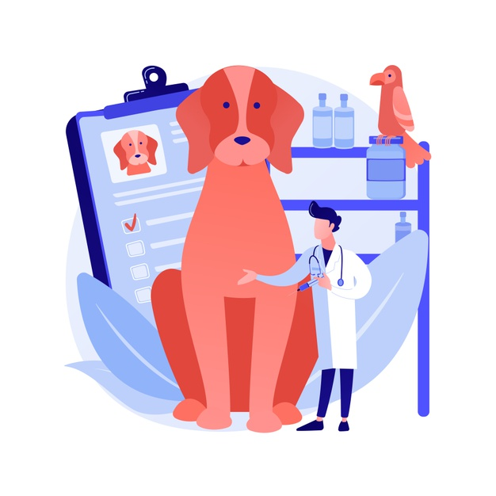
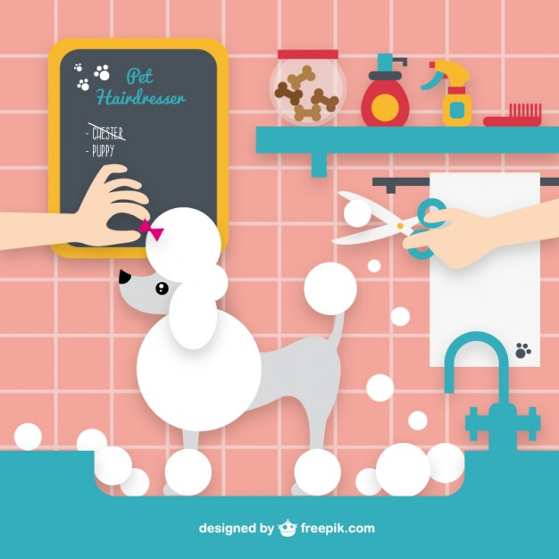

.png "Veterinaría Pasión Animal")
Los ojos de un animal tienen el poder de hablar un gran lenguaje...(Martin Buber)

Vacunas Sin Turno
Las vacunas disminuyen el riesgo de adquirir determinadas enfermedades y por tanto, permiten que nuestras mascotas disfruten de una vida más larga y saludable. Las vacunas son un elemento de vital importancia en nuestras mascotas y por tanto, se deben seguir las pautas de vacunación establecidas.

Cirugía
Por ejemplo en el caso de la cirugia de castración se proporciona mayores beneficios de salud para su mascota macho. Además de prevenir crías no deseadas, la castración de su compañero animal previene el cáncer a los testículos, si se lo realiza antes de los seis meses de edad. Su hembra esterilizada no entrará en celo.

Laboratorio Clínico
- Radiografías / Ecografías
- Anestesia Inhalatoria monitoreada
- Analisis clínicos
- Eletrocardiogramas
- Citología, Dermatología

Baño y Peluquería para Perros y Gatos
- Corte de Pelo
- Corte de Uñas
- Cepillado de Dientes
- Corte Higienico - Despeje de Zona Genital
- Limpieza de Oidos